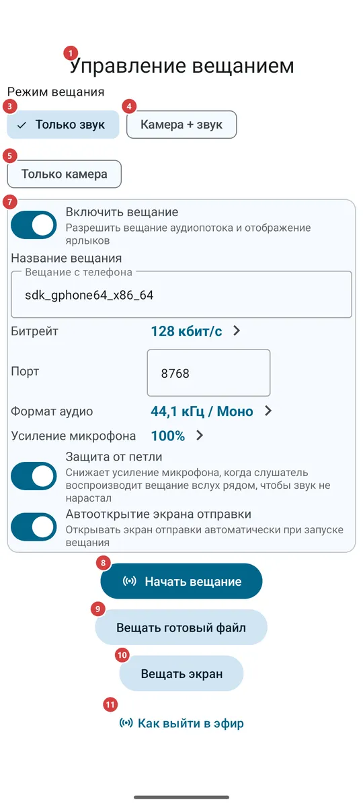
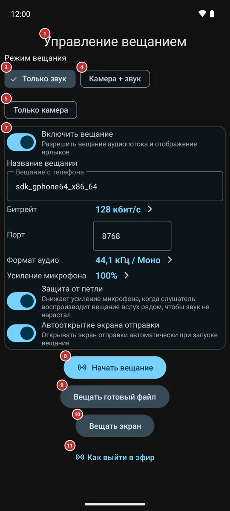

Управление вещанием
Для чего этот экран
Здесь вы выходите в эфир со своего телефона: передаёте микрофон, камеру, готовый аудио- или видеофайл или весь экран другим людям, а затем даёте им ссылку, QR-код или файл, чтобы они могли смотреть и слушать. Этот же экран показывает, сколько устройств подключено, и завершает вещание.


Порядок действий
- Откройте «Вещание» из меню программ, с панели программ, плиткой быстрых настроек или виджетом на домашнем экране. Если его там нет, сначала включите его в «Настройках», на вкладке «Медиа», в группе «Вещание». Экран 1 откроется с режимом «Только звук» и не гаснет, пока открыт.
- Выберите, что передавать: только звук 3, камеру со звуком 4 или одну камеру 5. В режиме с камерой появятся картинка камеры 2 и, если на телефоне несколько камер, список камер 6 на выбор.
- При необходимости поправьте название, порт и качество звука в карточке настроек 7 и нажмите «Начать вещание» 8. При первом запуске приложение попросит микрофон, камеру и уведомления - разрешите то, что назовёт сообщение.
- Чтобы передавать не камеру и микрофон, нажмите «Вещать готовый файл» 9 и выберите аудио- или видеофайл либо «Вещать экран» 10 и подтвердите системный вопрос о показе экрана.
- Пока вы в эфире, вверху видно число слушателей 12. Выключайте и включайте камеру 14 и микрофон 15, меняйте камеру 16, давайте экрану погаснуть 17 или подсвечивайте сцену (18, 19). Закончив, нажмите «Остановить вещание» 22.
- Передайте вещание зрителям: покажите QR-код 23, скопируйте ссылку 27, отправьте её 29 или сохраните в файл 28. У защищённого вещания есть ещё пароль 25 - сообщите его отдельно.
- «Cast на мои устройства» 21 и «Передать на часы» 20 отдают живое вещание вашим же устройствам, а «Гости» 30 - другому аккаунту. Кнопки-справки (11, 31, 32) открывают страницы на сайте.
Элементы
До начала вещания
1Управление вещаниемНазвание экрана, у которого два состояния: до начала вещания и эфир.
До начала вещания на экране видно, что передавать, и настройки. В эфире - живые кнопки и способы поделиться. Блок, который сейчас не нужен, скрыт, а не затемнён. Пока экран открыт, он не гаснет сам, пока вы не дадите ему погаснуть (17).
2Картинка камерыЧто видит камера и, в эфире, что именно передаётся.
До начала по ней выбирают камеру. Она появляется, когда выбран режим с камерой и камера разрешена; если камеру запретить, область останется пустой, а экран спросит разрешение только один раз за визит. В эфире здесь та картинка, что уходит зрителям. Для режима «Только звук» и для вещания файла или экрана область скрыта: камера в них не работает.
3Только звукПередаёт только звук микрофона.
Режим по умолчанию. Нужен только микрофон. Выбрать другой режим можно и в эфире: вещание тогда откроется заново в нём, а зрители заново открывают поток по обновлённой ссылке или QR-коду.
4Камера + звукПередаёт картинку камеры вместе со звуком.
Нужны камера и микрофон. В эфире камеру и микрофон можно выключать по отдельности (14, 15).
5Только камераПередаёт картинку камеры без звука.
Нужна камера. В некоторых редакциях Android просит ещё и микрофон, хотя звук не передаётся.
6КамераВыбирает, какая камера телефона передаёт картинку.
Одна кнопка на каждую камеру телефона: основную, фронтальную или внешнюю. Кнопки появляются в режиме с камерой, когда телефон перечислил свои камеры. В эфире касание меняет камеру сразу. Выбор запоминается до следующего раза.
7Настройки вещанияПараметры вещания рядом с кнопкой запуска.
В карточке те же параметры, что в группе «Вещание» настроек «Медиа»: включено ли вещание, название, битрейт, порт, формат аудио, усиление микрофона, защита от петли и открывается ли этот экран сам при старте. Изменения сохраняются сразу, а набранные название и порт используются при ближайшем запуске. В эфире карточка скрыта: настройки идущего вещания менять нельзя.
8Начать вещаниеВыходит в эфир в выбранном режиме.
Если для вещания не хватает разрешения - микрофона, камеры или уведомлений - система сначала спросит его, а при отказе сообщение назовёт, чего не хватает. Если вещание не удалось запустить, например телефон не смог открыть порт, сообщение скажет почему, а экран останется как был. В эфире вместо кнопки появляются живые кнопки и блок «поделиться».
9Вещать готовый файлПередаёт готовый аудио- или видеофайл вместо микрофона и камеры.
Открывает системный выбор файла для аудио и видео. Выбранный файл воспроизводится как живое вещание, без микрофона и камеры, поэтому кнопок для них нет. Файл, который не открылся или не содержит ничего для воспроизведения, отклоняется с сообщением. Кнопка видна только до запуска и только в редакциях, где вещание есть.
10Вещать экранПередаёт то, что показано на экране телефона.
Система спрашивает подтверждение каждый раз. Разрешение действует на одно вещание и не сохраняется. Если отказаться, ничего не начнётся. Во время вещания экрана кнопок камеры, микрофона и экрана нет: затемнив приложение, вы затемнили бы то, что видят зрители.
11Как выйти в эфирОткрывает на сайте руководство о том, как выйти в эфир.
Видна до начала вещания. Страница открывается в браузере, поэтому нужен интернет; в приложении ничего не меняется.
Пока вы в эфире
12Число слушателейСколько устройств сейчас подключено к вашему вещанию.
Число появляется только в эфире и следует за тем, как люди подключаются и уходят.
13Предупреждение о петле звукаОбъясняет, почему звук стал тише: динамик слушателя попадает в ваш микрофон.
Красная строка появляется, только когда «Защита от петли» убавила микрофон. Так бывает, если кто-то включил ваше вещание вслух рядом с микрофоном и звук начал бы нарастать до писка. Отодвиньте это устройство или убавьте на нём громкость - предупреждение исчезнет. Защита - параметр настроек вещания.
14Камера вкл и выклВыключает и включает картинку, не прерывая вещания.
Видна в вещании с камерой. Надпись на кнопке говорит, включена ли камера сейчас. При выключенной камере зрители видят чёрную картинку, а звук продолжается.
15Микрофон вкл и выклОтключает и возвращает звук.
Видна только в режиме «Камера + звук». Надпись на кнопке говорит, включён ли микрофон сейчас. При выключенном микрофоне зрители видят картинку без звука.
16Сменить камеруМеняет камеру, которая передаёт картинку.
Открывает список всех камер телефона, а не только фронтальной и основной; коснитесь камеры, и переключение произойдёт сразу. Выбор запоминается до следующего вещания.
17Погасить экранПозволяет экрану погаснуть, пока вещание идёт.
Там, где камера может работать в фоне, и в режиме «Только звук» кнопка перестаёт удерживать экран включённым, и дисплей засыпает через обычное время. В редакциях, где камера работает, только пока приложение на виду, кнопка называется «Затемнить экран»: она закрывает приложение чёрным экраном с тусклыми часами, а дисплей остаётся включённым. Чтобы вернуться, коснитесь чёрного экрана или нажмите «Назад». Для вещания файла и экрана кнопки нет.
18ФонарикПодсвечивает сцену вспышкой камеры.
Видна, только когда у камеры в эфире есть вспышка и камера включена; у фронтальной камеры вспышки обычно нет. Надпись на кнопке говорит, включён ли фонарик.
19Яркая рамкаПодсвечивает лицо яркой белой рамкой по краям экрана.
Белая рамка по краям экрана с повышенной яркостью этого окна - удобно, когда вы снимаете себя в темноте. Картинка, кнопки и QR-код под ней остаются доступными. Повышается только яркость этого окна, но не настройка яркости телефона. Рамка гаснет, когда вещание заканчивается или камера останавливается. Видна в вещании с камерой телефона.
20Передать на часыВключает это живое вещание на подключённых часах.
Видна в эфире, когда включено приложение-компаньон для часов и телефон его поддерживает. Отправляет вещание на часы и открывает его там. Если часы недоступны или не отвечают, сообщение скажет об этом.
21Cast на мои устройстваПросит другие ваши устройства воспроизвести это вещание.
Видна в эфире, пока вещание идёт через ваш сервер обмена (см. «Мои устройства»). Кнопка открывает список «Воспроизвести на» с вашими устройствами, которые умеют это играть, у каждого отмечено «В сети» или «Не в сети»; отметьте одно или несколько и нажмите «Cast на мои устройства». Каждое устройство получает запрос, который может принять или отклонить, а сообщение скажет, какое играет или почему отказалось.
22Остановить вещаниеЗавершает вещание.
Слушатели отключаются, камера и микрофон освобождаются, экран возвращается к состоянию до запуска, и карточка настроек снова на месте. В уведомлении вещания есть собственная кнопка остановки.
Как поделиться вещанием
23QR-код описания вещанияQR-код, который передаёт вещание устройству рядом.
Другое устройство сканирует его, чтобы добавить вещание: в «Трансляциях» откройте меню и выберите «Импорт трансляции (QR / файл)». Коснитесь кода, чтобы показать его на весь экран и отсканировать с другого конца комнаты; чтобы вернуться, коснитесь ещё раз или нажмите «Назад». Если режим меняется в эфире, код заменяется, в том числе открытый. Пароль в код никогда не входит.
24Ссылка на вещаниеАдрес, по которому отдаётся ваше вещание.
Текст можно выделить. Адрес работает для устройств, которые достают до вашего телефона по сети. «Копировать ссылку» (27) копирует его, а «Отправить» (29) передаёт ссылку, которая открывает вещание в приложении, собранную из тех же данных, что и QR-код.
25Пароль для ссылкиПароль защищённого вещания, который сообщают отдельно от ссылки.
Виден только у защищённого вещания. Ни ссылка, ни файл, ни QR-код его не содержат, поэтому человеку его сообщают отдельно - голосом или другим сообщением.
26Новый парольСоздаёт новый пароль; старый перестаёт работать.
Пригодится, если пароль попал к тому, кому его знать не нужно. Сообщение напомнит сообщить новый пароль отдельно от ссылки.
27Копировать ссылкуКопирует ссылку на вещание.
Сообщение подтверждает копирование. Защищённое вещание копируется полной ссылкой, а не голым адресом, чтобы другое устройство знало, что нужен пароль, и спросило его.
28Экспорт в файлСохраняет вещание в небольшой файл, который можно передать.
Система спросит, куда сохранить. Тот, кто получил файл, добавляет вещание через «Импорт трансляции (QR / файл)» в «Трансляциях». Сообщение скажет, сохранён ли файл.
29ОтправитьОтправляет ссылку через любое выбранное приложение.
Открывает системный список приложений и контактов. Ссылка открывает вещание в FastMediaSorter на другом устройстве; если приложения там нет, откроется страница на сайте.
30ГостиВыдаёт живое вещание другому аккаунту вашего сервера обмена.
Видна только у защищённого вещания, объявленного через сервер обмена учётной записью-участником. В диалоге «Выдать трансляцию гостю» вводят логин гостя (от 3 до 64 букв, цифр, точек, дефисов или подчёркиваний) и нажимают «Выдать»; ниже перечислены все, у кого вещание есть, с ответом сервера - ожидание, выдано или отказ. «Отозвать» забирает вещание только у одного гостя.
31Как это смотретьОткрывает страницу, которую можно переслать тому, кто получает вещание.
На странице объяснено, как смотреть по ссылке, QR-коду или файлу. Она открывается в браузере, нужен интернет.
32Как работает трансляция между устройствамиОткрывает страницу о том, как работает вещание между устройствами.
Страница на сайте, открывается в браузере. Нужен интернет; в приложении ничего не меняется.